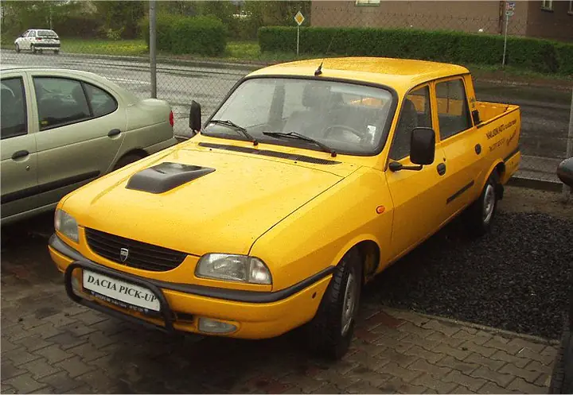

Dacia Pick-Up
1975–2006
Abstract
The Dacia Pick-Up is a pick-up, built 1975–2006 in Romania: Mioveni. Body styles: 2-door regular cab, 2-door chassis cab, 2-door king cab, 4-door double cab, 4-door short bed. Layout: Front-engine, front-wheel-drive, rear-wheel-drive or four-wheel-drive. Designed by Ionuț Velea.


1Specifications
| Production | 1975–2006 |
|---|---|
| Model years | 1975–1982 (1302)1982–2006 (1304 Pick Up)1983–2006 (1304 Drop Side)1992–2006 (1307 Double Cab)1992–1998 (1309)1994–2003 (1304 King Cab) |
| Assembly | Romania: Mioveni |
| Designer | Ionuț Velea |
| Class | Pick-up |
| Body style | 2-door regular cab2-door chassis cab2-door king cab4-door double cab4-door short bed |
| Layout | Front-engine, front-wheel-drive, rear-wheel-drive or four-wheel-drive |
| Engine | 1.3 L I4 (petrol)1.4 L I4 (petrol)1.6 L I4 (petrol)1.9 L I4 (diesel) |
| Transmission | 4/5-speed manual |
| Wheelbase | 2441 mm (1302/1309)2675 mm (1304)2795 mm (1307) |
| Length | 4674 mm (Pick Up)4599 mm (Drop Side)4794 mm (Double Cab) |
| Width | 1636 mm |
| Height | 1550 mm |
| Weight | 1125–1270 kg |
| Also called | Dacia One Ton (United Kingdom)Dacia Shifter (United Kingdom)Dacia Gamma (2000s)Dacia Familia (Double Cab) |
| Related | Dacia 1310 |
| Successor | Dacia Logan Pick-Up |